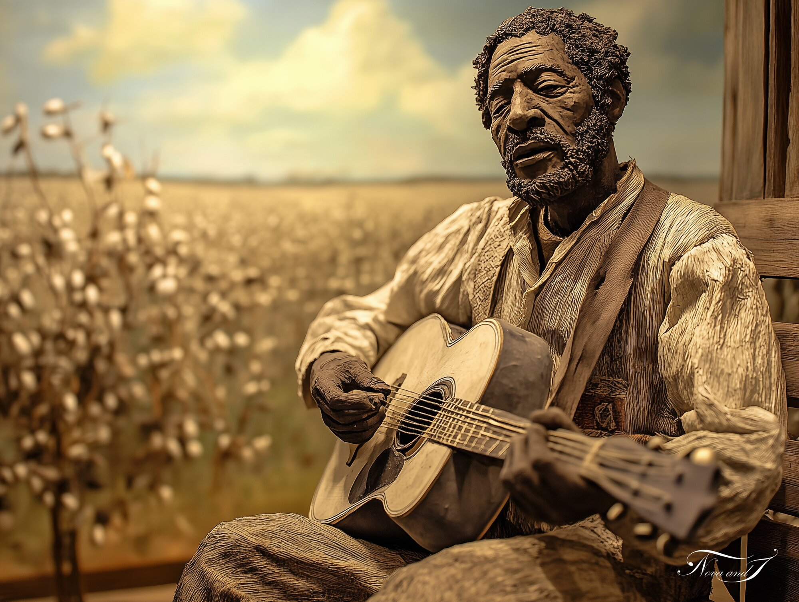

Via Gnosis · Salon des Arts de Sochaux
Thierry Voitot — Œuvre n° 5

Thierry Voitot
« Dans le champ de coton, une voix cherche sa première corde. »
« Le blues ne s'invente pas — il se creuse, note après note, dans la fatigue et la lumière du soir. »
Ambiance sonore
Un morceau composé pour accompagner cette œuvre
Dimensions
30 × 40 cm
Valeur
100 €
Autres formats — nous consulter sur devis
Nous contacter
24ᵉ Salon des Arts de Sochaux — 29 et 30 août 2026